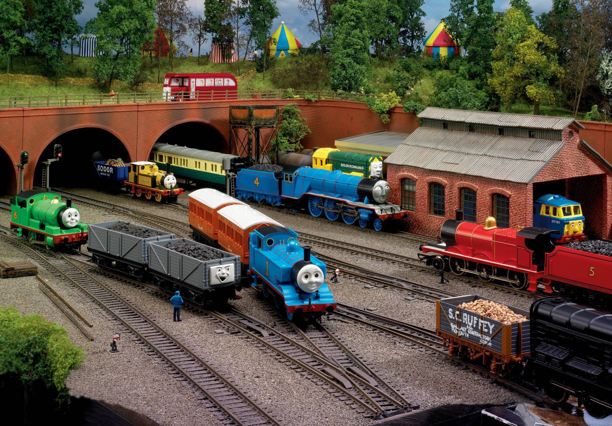

What’s Foo Bar?
You’ve probably seen something like this before:
1 2 3 4 | |
But what is the origin of using “foo,” “bar,” and “baz” as placeholder names in pseudocode (aka metasyntactic variables)? According to the interwebs, “foo” first emerged as a nonsense word in the 1930s in the comic Smokey Stover by Bill Holman and became popular in other cartoons at the time. From there, “foo” merged with the military acronym FUBAR, which arose in the armed forces during WWII. The use of “foo” in programming, however, is credited to MIT’s Tech Model Railroad Club (TMRC) in the 1960s.

The TMRC is celebrated due to its developmental role in hacker culture. Foo’s first appearance in print was in a 1965 edition of MIT’s “Tech Engineering News.” In TMRC’s train model system, there were scram switches located at numerous places around the room that could be thrown if a train was going to crash into something. Another feature of the system was a digital clock on the dispatch board. When someone hit a scram switch, the clock stopped and would instead display the word “”foo”,“ thus why they were called ”“foo” switches”.
The train room also had two buttons by the door labeled “foo” and “bar”. They were often re-purposed for whatever fun idea the TMRC had at the time, hence the adoption of “foo” and “bar” as general purpose variable names. “Baz” exists simply because Stanford preferred “baz” over “bar”.
The terms were made popular through computer science circles in the 1960s and early 1970s by system manuals from the Digital Equipment Corporation and Fortran’s code for Colossal Cave Adventure.
Pseudocode in other countries:
- UK: wibble, wobble, fred, flob
- France: toto, tata, tutu, bidule, azerty (French keyboard’s asdf)
- Japan: hoge, piyo, fuga, hogera
- Isarael: chupchick, stam
- Italy: pippo, pluto, paperino
- Spain: fulano, mengano, zutano
TL;DR
- “foo” is a nonsense word from 1930s comics.
- FUBAR comes from US military slang during WWII.
- MIT’s Tech Model Train Club popularized the terms for tinkering/hacking.
- Use “foo”, bar, and baz to test out concepts so you don’t cause a SNAFU and make your code FUBAR.
- What about “Hello, World”? It comes from The C Programming Language.
- What about “Chunky Bacon”? It comes from why’s (poignant) Guide to Ruby.